Check it out:
The intro opens on a dog. This is Charlie, Tom’s pug. Charlie has his own instagram account and a pro model for Skate Mental.
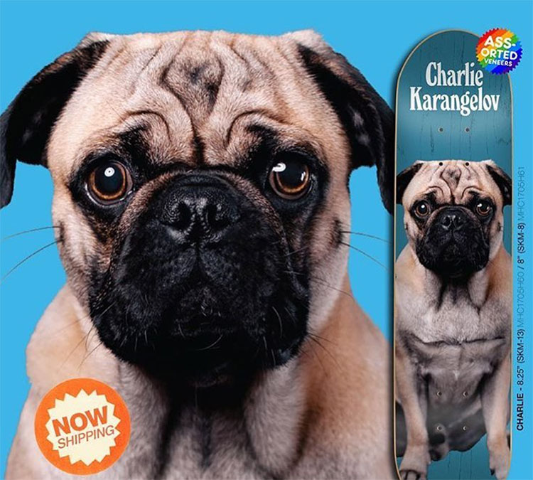
The shot pans over a towel covering a couch which features WKND’s Andrew Consadine’s debut "Badfish" graphic, which is a reference to the song on Sublime’s 1992 debut album in both name and image.
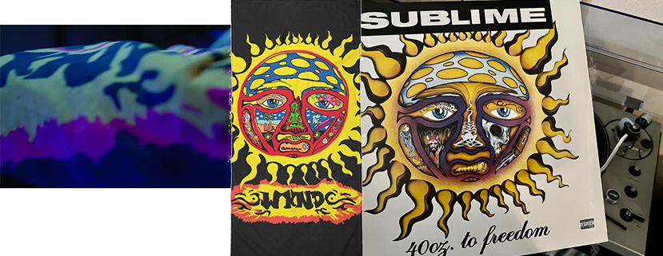
We know this is going to be a nostalgic affair as the shot reveals shelves of a small table featuring a Super Nintendo and games, compact discs, and a bunch of VHS movies and skate videos including Thrill of It All, Jump Off A Building, Yeah Right, Sorry, Destroying America, and Shit (the Big Brother video). Other videos on this shelf include movies such as The Thing, Mad Max, Big Trouble In Little China, Uncle Buck, and The Fugitive. Of note is the presence of The Truman Show, which was spoofed in the 2018 WKND skit called The Tru Mon Show, and Pulp Fiction, which was the visual basis of Tom and Jordan Taylor’s shared 2019 interview in Thrasher titled Spot Friction.
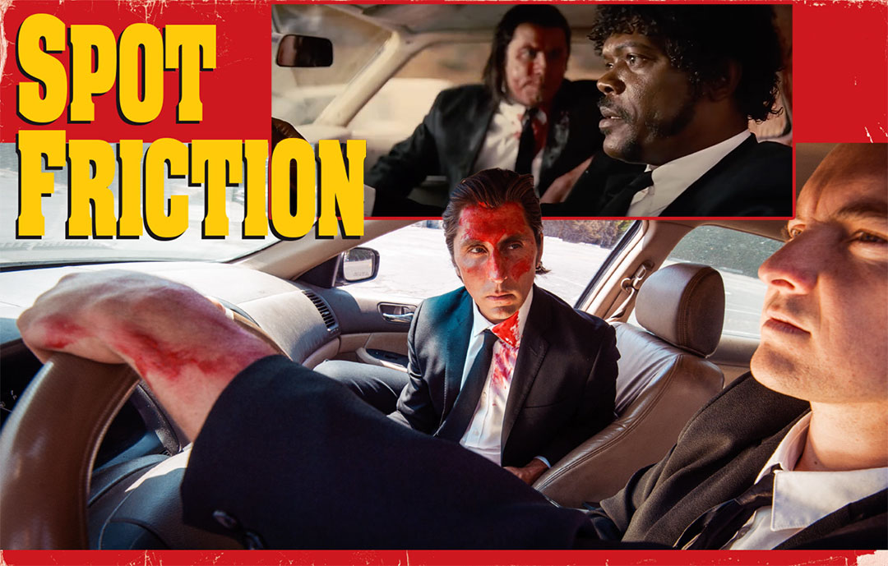
A small television on top of the shelves is showing a news broadcast about “Snow For Days In Los Angeles” which creates a continuity from Sarah Meurle’s “Cellular Reconstruction” part-closing skit which directly precedes Tom's intro.
Above this television is a mechanical desk alarm clock. The face on the alarm clock is upside down. It is said that an upside down clock can symbolize yearning or introductions as well as anxiety, and while this seems to track, WKND filmmaker Grant Yansura informs us that, in actuality, the clock had fallen and broken apart many times while they practiced filming this sequence. They had simply attached the face upside down inadvertently and unknowingly.
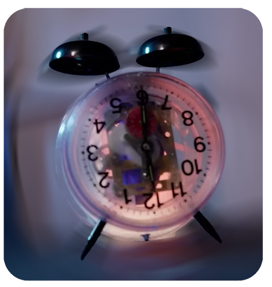
The clock strikes 11:30 or maybe 6 o’clock and alarms. The sound of the alarm is taken from the opening of the Pink Floyd song “Time” from the Dark Side of the Moon album. This song, you’ll note, soundtracks Mike Maldonado’s part in Toy Machine’s 1998 Jump Off A Building video.
Interesting sidebar: Grant and his practical effects crew got the clock to shake by attaching a small vibrating wireless sex toy to the back.
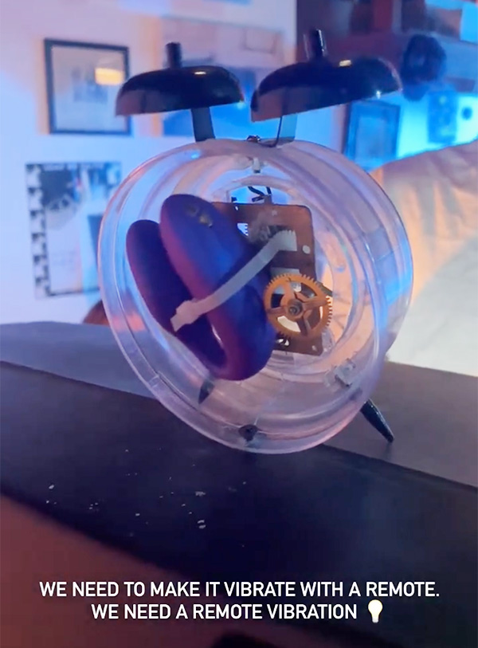
The shot shifts over to a lit red candle which is under a string. The snapping of the string initiates the beginning of a Rube Goldberg machine, which is a chain reaction–type contraption intentionally designed to perform a simple task in an indirect and (impractically) complicated way. This machine in Karangelov’s intro is a specific reference to the ‘breakfast machine’ from Tim Burton’s 1985 film Pee-Wee’s Big Adventure. The machine in that movie is also started with the flame of a red candle burning a string (and also involves the dispensing of dog food). It is worth noting that while portions of the Tom K machine are manipulated by off-screen hands, it is executed in one continuous shot, whereas Pee-Wee’s machine involves several cuts and edits.
Let’s take a moment to review some of the things that dress the set in the background of the upcoming sequence. Most of these items are Tom’s personal possessions (as seen in his 2020 Out There episode), so they are, by default, signifiers of Tom K, and further references therein may or may not be coincidental.
- Red belt on the wall - from WKND teammate Jordan Taylor’s accessory company Loosey.
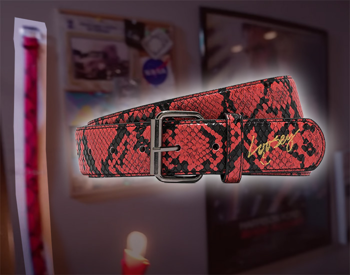
- The novelization of Heat 2
- Blade Runner movie poster
- Dinosaur toy (could be a Jurassic Park reference, or maybe Toy Story, or maybe not)
- A stretched canvas artwork of a dumpster
- A poster of the Zero Leap of Faith ad, autographed by Jamie Thomas (Tom used to ride for Zero)
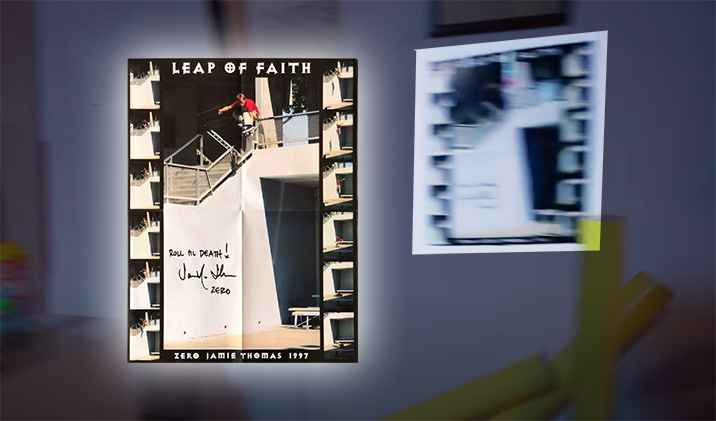
- A 1970s Topo Gigio mouse figure
- Toy cars
- A basketball trophy
- A prop bottle of Pepsi Perfect from the feature film Back to the Future
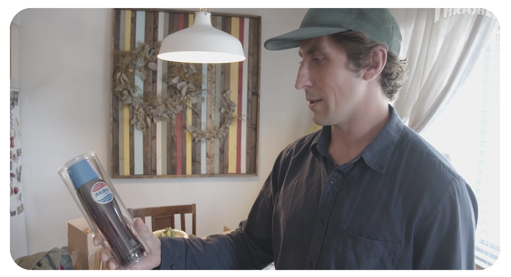
- A toy hippopotamus
- A decoy duck
- A framed broken deck from Joker’s skate shop, Tom’s longtime shop sponsor
- A piece of granite from the old Huntington Beach skatepark, gifted to Tom from Geoff Rowley
- A Brian Anderson pro skate deck from 3D skateboards, an old sponsor of Tom’s
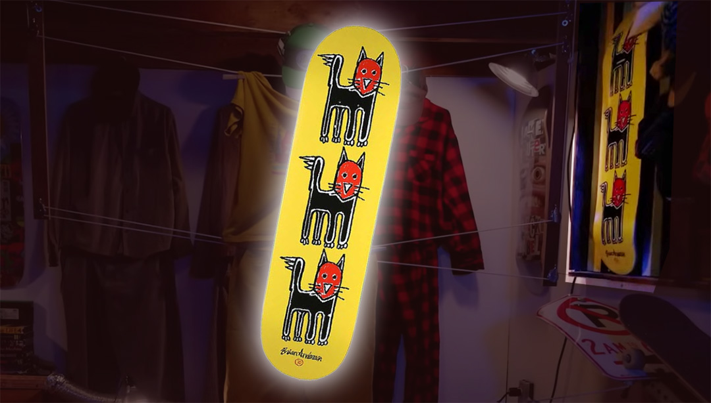
- A metal ‘Detour’ road sign, frequently used to cover cracks or create small curb ramps
- Tom’s hat rack
- Shelves of power tools as well as bondo and painting gear
- A super8mm film projector
- A birdhouse
- A Devo hat
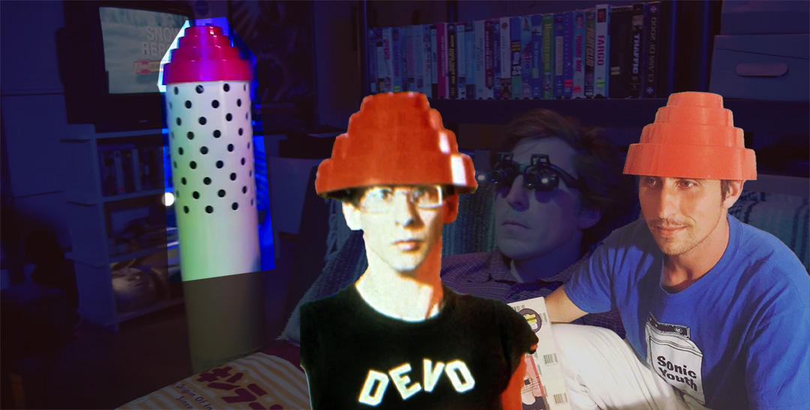
- A small Teenage Mutant Ninja Turtles toy
- There is lots of other stuff present that we can’t clearly identify. What did we miss?
Turning our attention back to the machine; The broken string releases a pendulum sledgehammer that knocks over a sequence of yellow poles. These yellow poles falling sideways invoke the popular bent-pole pole jam obstacle. Askew poles have become so associated with Tom Karangelov that he is frequently reposting all the images of such obstacles being regularly sent to him from fans.
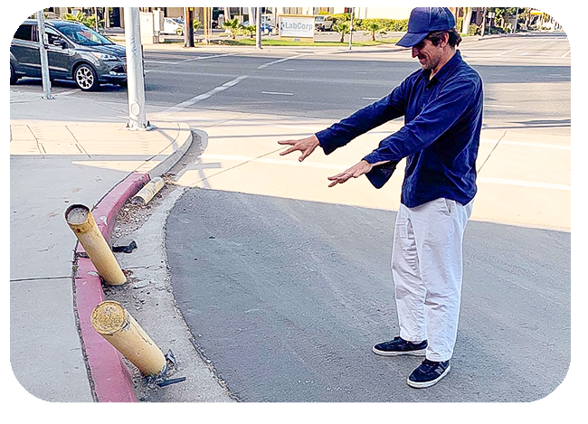
The tumbling poles hit an articulated mannequin arm holding a hammer. As discussed here on 4PLY, the hammer is Tom’s go-to tool for skate stopper removal. But the symbolism of the hammer goes even deeper, being used as a sign of oppressive authority in Pink Floyd’s 1982 movie, The Wall, as well as invoking the skate-vernacular phrase “hammer” to represent heavy tricks. And, of course, we must also mention that no skater can see a hammer and not think of the man who invented the phrase “hammer”, Jim Greco.
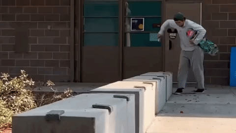
The arm with the hammer swings around and starts a domino tumbling sequence made of liberated skate stoppers. Behind the falling skate stoppers on top of the dresser are numbers vintage skate videos and movies in VHS form, including Jurassic Park (2 copies), MuskaBeatz, Mouse, multiple issues of 411VM and On Video, Home Alone, Zoo York’s EST, Baker3, The Full Monty, The Chocolate Tour, Transworld Skateboarding’s Greatest Hits, Point Break, Toy Machine’s Heavy Metal, and Quasi’s Mother.
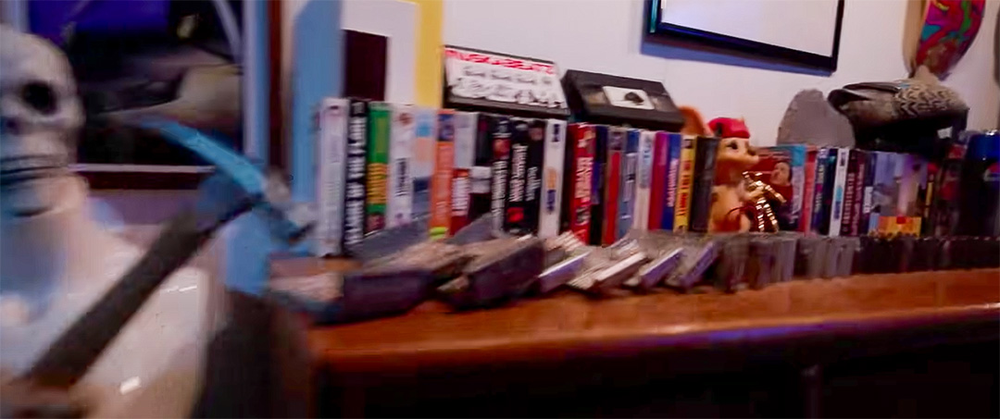
The final skate stopper hits a skate wheels (a Spitfire F4 99 Conical), which rolls down a ramp made with rulers, through a dryer hose, and down a ladder on its side where it collides with a posable hand. The index finger of the hand turns on a power strip that fires up several power drills that rotates a conveyer belt made of Spitfire wheels and Pepper grip tape (also Tom’s sponsors).
On the conveyor are a pair of New Balance Numeric shoes. These shoes are a preview of an upcoming WKND x NB# collaboration pair (I think they are 272s). You can see these shoes in action in Tom’s skate part in Rumble Pack at the 13:17 mark.
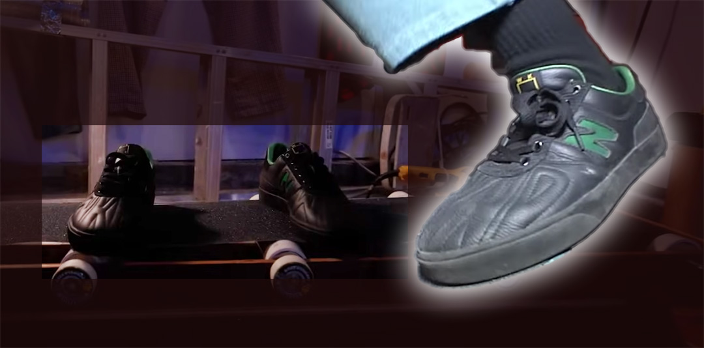
These shoes line up with a matching yellow pants and yellow Talking Heads shirt combo that slide in on wires. This outfit, inspired by a photo of the Brian Lotti, can be seen in lots of Tom clips, including his jam rail nosegrind on the Jeremy Wray uprail. Actually, the Talking Heads shirt in this Rumble Pack intro is a different yellow Talking Heads shirt than Tom has worn previously.
Also, there are other matching Tom K outfits hanging in the background.
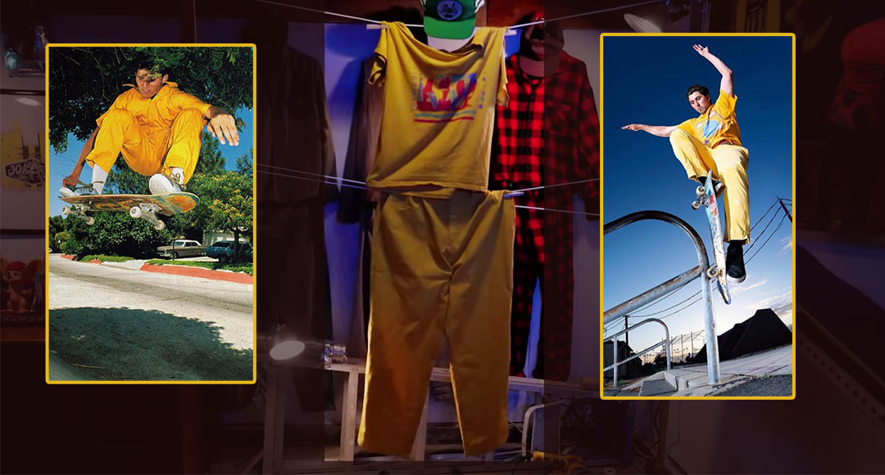
The shoes continue on the conveyor and knock over a grabby-claw hand that pulls a string to release a complete skateboard balancing on a broken square pole of a No Parking street sign. Yes, it’s another pole-jam allusion. The deck grinds down the pole and hits a yellow fire hydrant.
The yellow hydrant is another common Tom K obstacle, frequently paired with the same yellow outfit we just saw. The impact on the hydrant pops open its side valve, pouring out some dog kibble as a makeshift bowl.
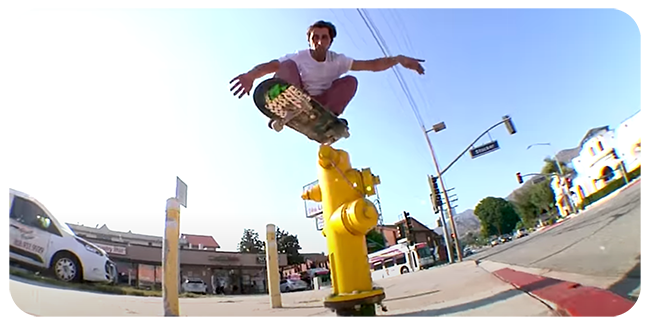
This entire sequence has all been done as one continuous 37-second shot. According to Grant and his team of video wizards, the machine sequence took 3 days to build and film.
The next shot resumes the look around Tom’s garage. It starts with Charlie the dog having a snack in the hydrant/bowl and pans over to reveal a stack of 17 television monitors of various sizes all simultaneously playing a skate video. What's the significance of 17 skate videos? It's because Tom has previously released 17 video parts prior Rumble Pack.
The video playing is Brian Anderson’s part in Welcome to Hell (specifically the front blunt of Hubba Hideout). BA’s Welcome to Hell part was scored by Pink Floyd’s “Another Brick In The Wall (Part 2)”. The iconography of a stack of televisions was used in the Enter the Museum series of skate videos by Tom and Matt Bublitz.
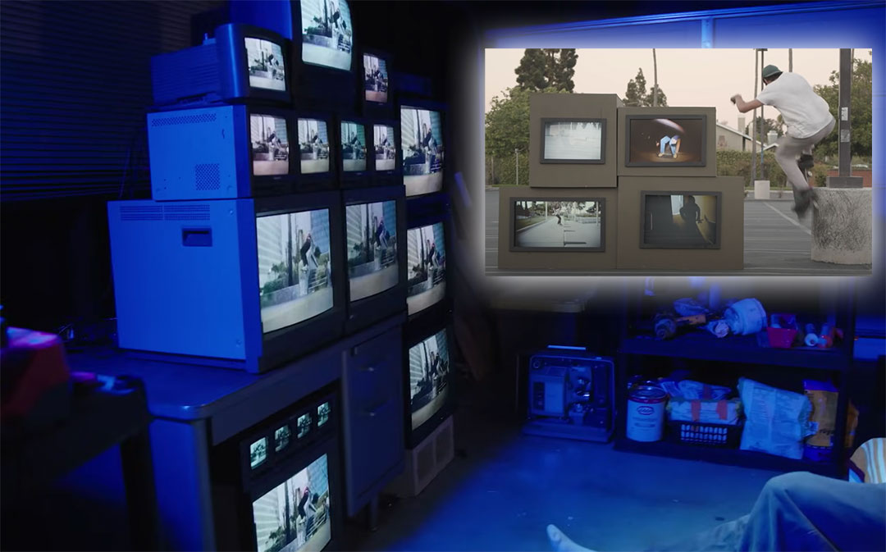
The shot then dollies over to reveal Tom sitting way back on his couch watching the television stack. He is wearing a pair of magnifying glasses with mounted side lights. While these glasses are frequently used by jewelers and miniature hobbyists, I’d like to think these are here to invoke a science fiction dystopia. Perhaps something like the groundbreaking avant garde 1962 French short film La Jetée (the basis of the film 12 Monkeys). Or perhaps the 1981 James Caan movie, The Thief.
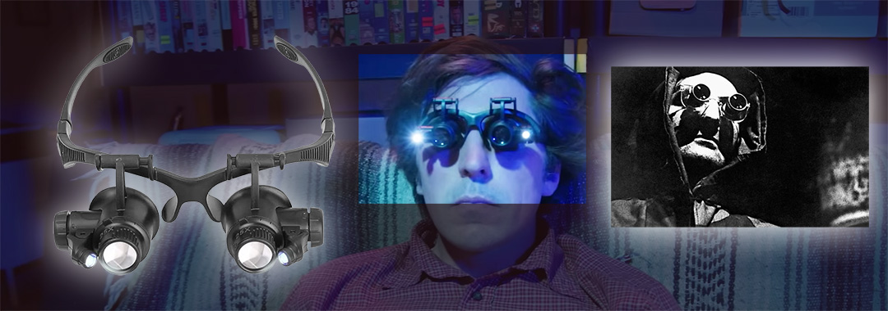
The video starts freezing and glitching, so Tom rises to fix the VCR with some cutlery. The light gleaming off the knife is a reference to an opening sequence shot in the 1985 film Back to the Future where light gleams off Marty McFly’s metal guitar pick.
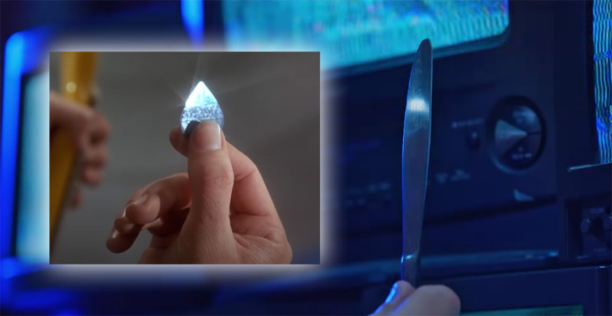
The next shot is looking at Tom from within the VCR. This shot might be said to be inspired by a shot from the movie Uncle Buck where Macaulay Culkin’s character looks through the mail slot. This shot was a seed of what inspired Uncle Buck director John Hughes to make Home Alone. You’ll remember, VHS copies of both Uncle Buck and Home Alone are seen in this Tom K intro sequence.
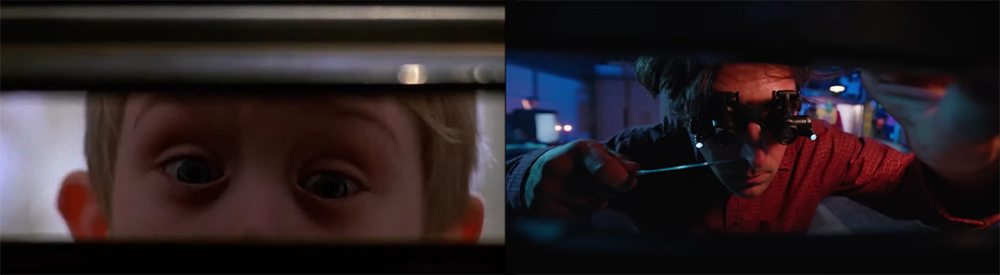
Sparks fly while Tom jams his knife into the VCR, eventually causing an explosion that blows Tom across the room. He lands on the couch and the shelves behind him topple over, dumping their contents onto Tom. This is a very precise remake of a shot from Back to the Future, where Marty McFly is similarly blown across the room by the volume of his guitar speaker. The shot was made with live fireworks exploding into Tom’s face and then him being pulled through the air with a wire that was later digitally removed. These are amazing practical effects the likes of which we haven’t seen in a skate video since Steve Berra got decapitated in The End.

Next we have the “Nightmare” sequence, where Tom awakes from the VCR mishap in a new and unpleasant dream-like reality. It starts with a first-person perspective shot as Tom arises and turns on an overhead light. The nightmare footage is of lower resolution with old school video glitches, suggesting the Tom has perhaps entered an alternate VHS reality where his mind is permanently recalibrated by all the vintage skate and pop culture he absorbs.
There is a solid history of first-person perspective shots, and even entire movies, in filmmaking. Sometimes referred to a "subjective camera" technique, it is filmed as to have the viewer see the action through the protagonist's eyes. It has been employed as early as 1927 and was popular in 1940s film noirs like Lady in the Lake and Dark Passage. We feel that this shot is more representative of modern first-person film references like Robocop, Being John Malkovich, Enter the Void, or even the plethora of first-person video games. Also, and perhaps most appropriate in the Karangelov context, John Carpenter’s Halloween.
The first-person mirror shot is quite a clever piece of practical effects filmmaking, created with a hole in the wall, a camera man wearing the same shirt as Tom, and a lot of practice coordinating movements.
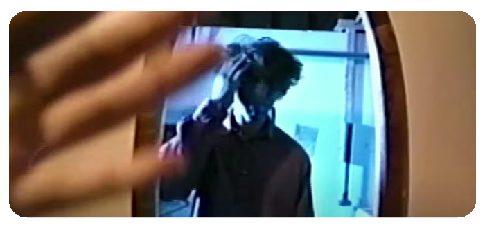
The nightmare gets going with some video glitches as we slowly head towards a tunnel built into the side of a concrete ditch. This tunnel and ditch is reminiscent of one that graced the cover of a 2004 Transworld magazine that folded out to reveal Geoff Rowley.
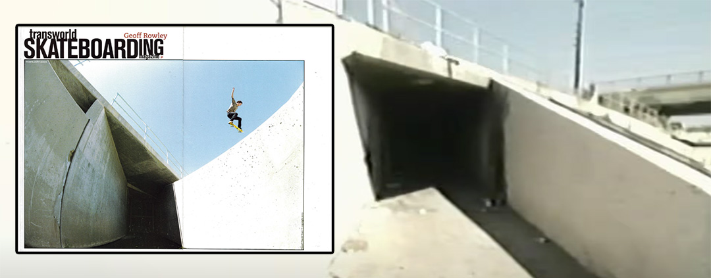
The voice of Brain Anderson calls to Tom and we suddenly cut to a square looking BA eating breakfast and welcoming Tom, not to hell, but to “the real world”. We have entered Tom’s nightmare reality where BA wears a suit and tie and inspires Tom not to skate but “pay your phone bill”.
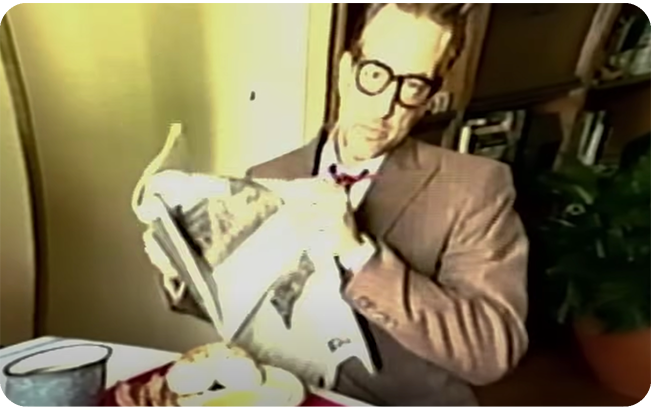
We continue into the tunnel but abruptly cut to Jamie Thomas, Zero chief, in a darkened warehouse. Jamie unfurls a written trick list in the form of a seemingly endless scroll. This is the checklist of tricks Tom needs to film, delivered by the most discerning and demanding filmer and company owner in the biz.
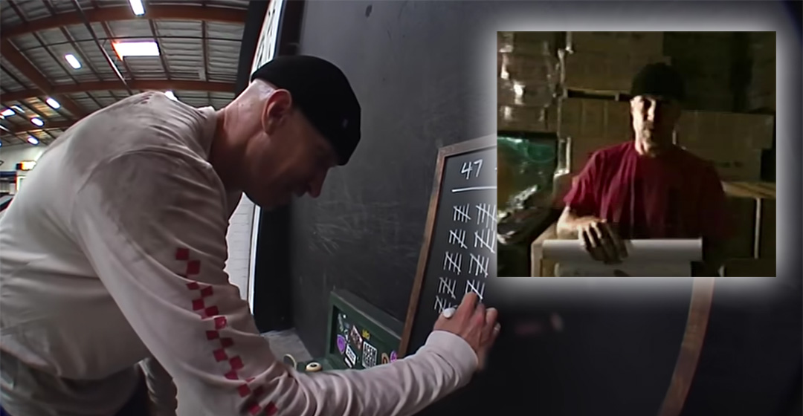
The scroll ends at the feet of Tom’s former New Balance teammate and tech skating innovator PJ Ladd, who is notorious for being stingy with his footage. PJ picks up the list and with a glance declares “Not good enough.” Jamie wants more, and even if Tom could film these tricks, PJ is not impressed.
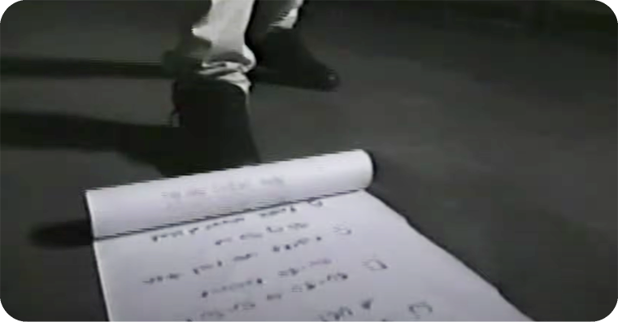
As we head deeper into the tunnel (Tom is known exploring tunnels both to find skate spots and just to have fun “Ninja Turtling”) we find ditch-skating legend Geoff Rowley reciting the lyrics to Motörhead’s "Orgasmatron". Geoff and Motörhead frontman Lemmy Kilmister recited these lyrics together during a pause in Geoff’s Extremely Sorry part.
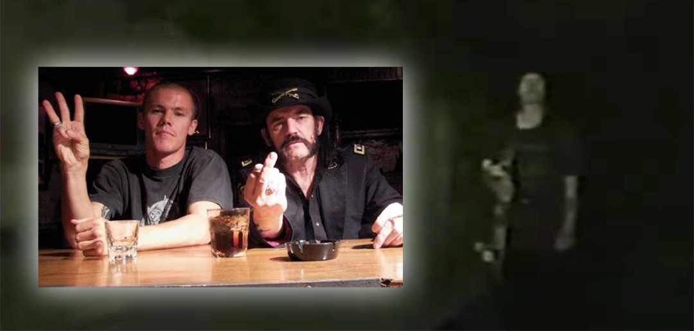
We jump cut with a video glitch to a first person perspective shot of Tom opening his freezer and grabbing some vegan ice cream. Behind the ice cream is Ed Templeton’s head in a jar. This quick shot contains several references. The first is the clear quotation of the head in the freezer behind some sorbet shot in the 2000 film American Psycho. You’ll remember that American Psycho was the basis of the excellent WKND “New Board” parody skit that introduced Tom to the team.
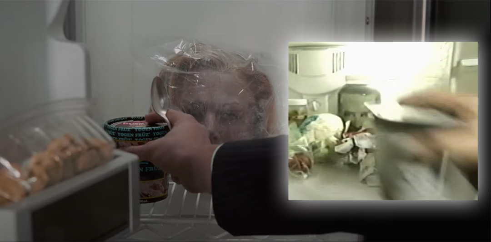
The second reference in the freezer is connecting vegan ice cream to Ed Templeton, who is vegan. So, in a way, the ice cream and the head in the jar are both vegan. Tom has mentioned in several interviews that his favorite skater is Ed.
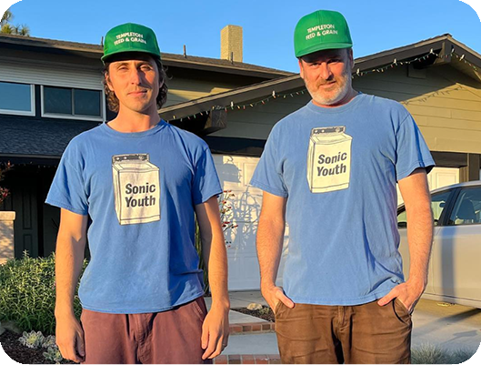
A third reference in this freezer clip is the allusion to all the generic food labels used in the classic 1984 film Repo Man. We probably wouldn’t have caught that one if Grant didn’t clue us in.
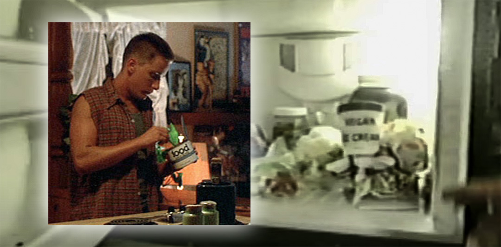
This freezer shot cuts to the interior of an office. Turning from the computer is none other than Tony Hawk. It appears that Tony is editing on the computer, just like he was forced to do to make ends meet in the early 90s during that not-very-profitable early days of Birdhouse Projects. Hanging with Tony is WKND am Tanner Burzinski. Tony inquires “Oh, you didn’t get a necklace?”. This is referring to the Töofargøne necklace that Tony is now wearing. A similar necklace was also given by Tanner to the robot filmer in the recent WKND video JIT. Grant Yansura was quite bummed by the fact that the robot filmer was popular enough to be given a necklace. Apparently Tom didn’t get a necklace either. And it appears Grant has been reduced serving as Tony’s human footrest, not unlike the subservient role Bucky Lasek played in the 1998 Birdhouse video, The End.
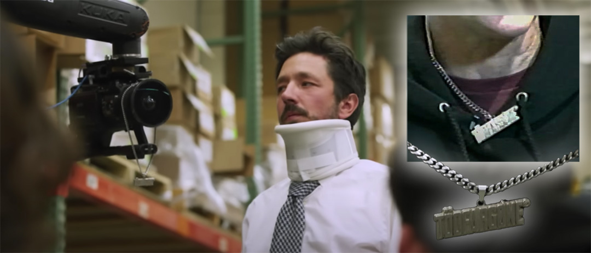
We then see a shot of Tom stacking on a flat street gap ollie accompanied by a voice over from Jeremy Wray. “I did longer ollies in the 90s,” Wray taunts, and we see him laughing while standing below the location of his famous water tower gap ollie from 1997. This part of the nightmare is factual; Jeremy Wray did do longer ollies in the 90s. He probably doesn't taunt other skaters about it, though.
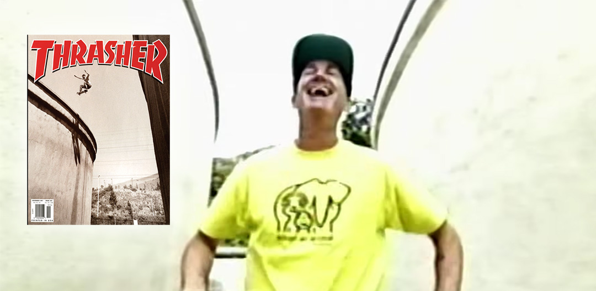
We pass Geoff Rowley in the tunnel as the soundtrack slips into the opening riffs of Pink Floyd’s “Wish You Were Here”. We see Tom holding his skateboard and he is literally on fire. This is a quick behind the scenes look at the photo where Tom emulated the cover of Pink Floyd’s 1975 album Wish You Were Here. Tom lays on the ground and gets hit with a fire extinguisher.
Side note: there is a sweet looking bump-over-bar in the background of that album cover.
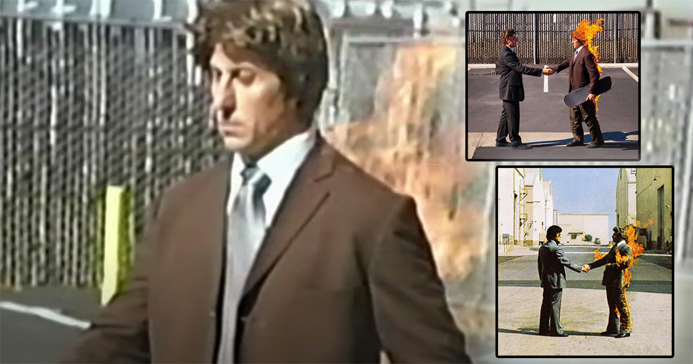
Cut back to the dark warehouse, where Skate Talk Live’s Bob Altamirano is kicking knowledge in a callback to the recent Alan Gelfand High skit for WKND’s collab with Them inline skates. Bob is telling Tom that no one get’s Pink Floyd, referring to the fact that clearing the rights to use a Pink Floyd song in a skate part is beyond the capability of all sponsors.
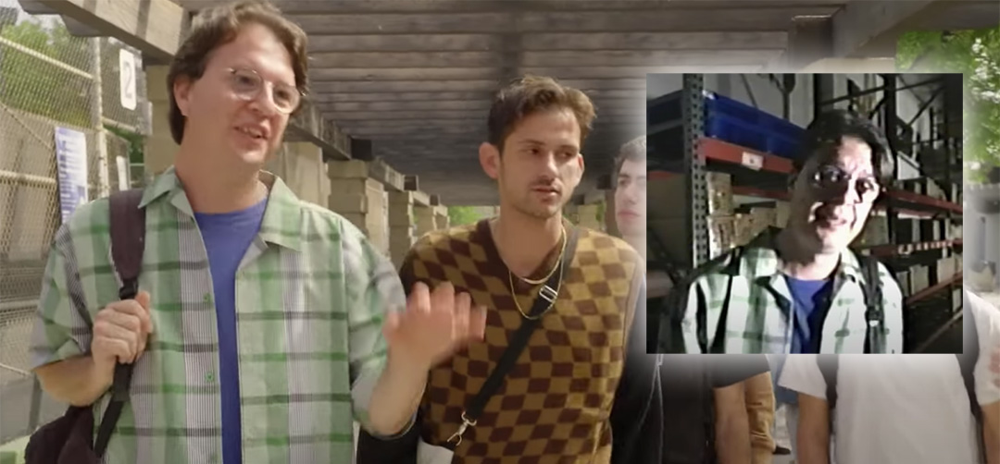
“He don’t get Pink Floyd,” Bob says, referencing the janitor in the background. The janitor is, of course, Heath Kirchart, reprising his cameo role from the Alan Gelfand High skit.
“Spielberg don’t get Pink Floyd” is a direct quote from Heath’s commentary about his immortal Sight Unseen part for Transworld. The Moody Blues’ “Nights In White Satin” was not Heath’s first song choice for that part. He requested both Guns N Roses’ “November Rain” and Pink Floyd but was quickly shot down.
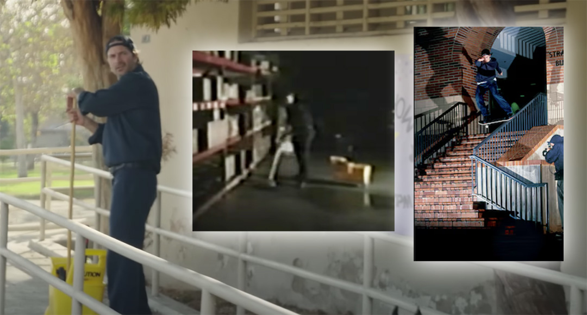
The final shot of Tom’s nightmare sequence, before the actual skate part begins (triumphantly scored by Pink Floyd’s “In The Flesh” from The Wall) is a flash zoom to a glaring HK, whose face then proceeds to melt away leaving only his skull, staring eyes, and backwards trucker hat. This is a solidly executed homage to the beloved Nazi face-melting scene from the climax of 1981 film Raiders of the Lost Ark, directed by a Floyd-less Steven Spielberg.
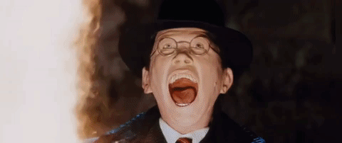
And then the skateboarding starts.
In addition to Rumble Pack and the two previously mentioned Toy Machine parts, has any other skaters managed to “get” Pink Floyd for their part?
Yeah, there's been a few.
And exactly how did Tom get Pink Floyd when others have failed?
The answer is as simple as WKND releasing the video through Grant Yansura's non-monetized Youtube channel. Does this mean that, more or less, all these skate companies getting delayed and thwarted by expensive musical clearances could simply just turn off the revenue and problem solved?
So, what did we miss? What have we misinterpreted? Let us know on the 4PLY instagram and we’ll update this article with your notes. Special shout out to Overthinking Skate Videos for connecting some dots that we missed. Support WKND so they can keep making videos and keep up the good work, Tom.
Still don’t want to get off the computer?
Here is Heath’s Sight Unseen part with the Pink Floyd soundtrack.